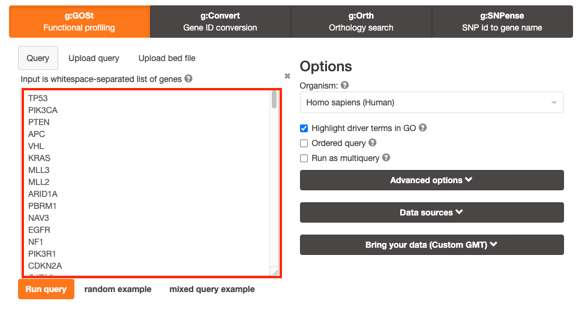
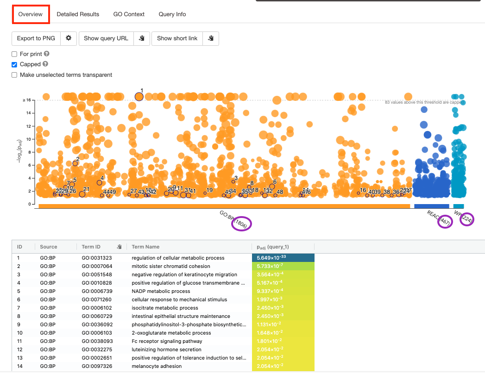
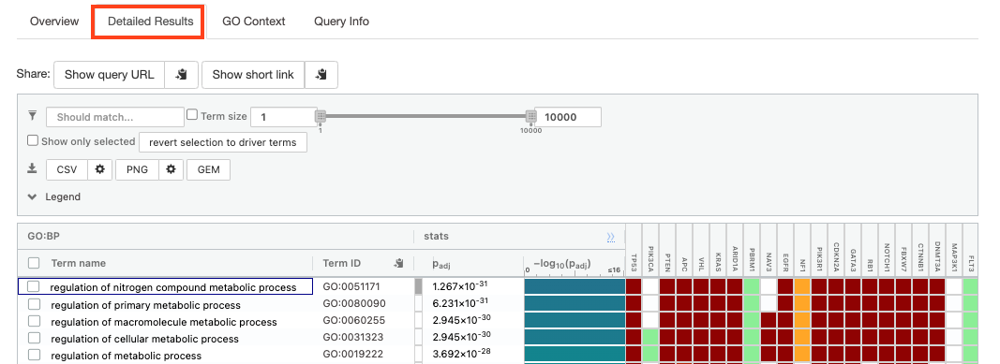
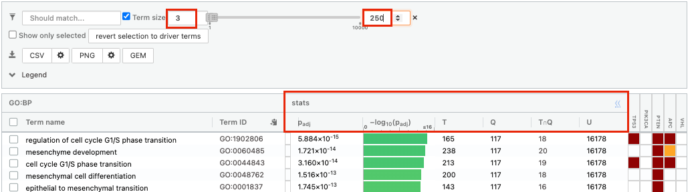
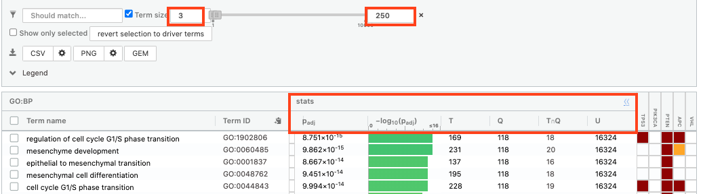
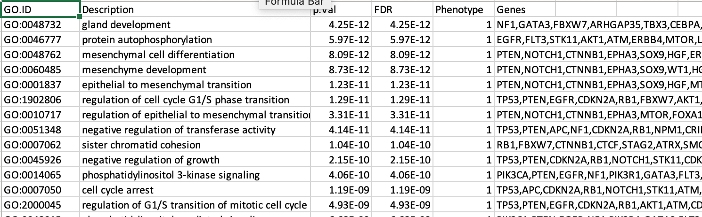
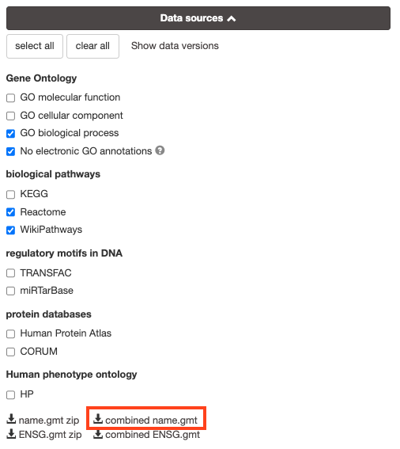
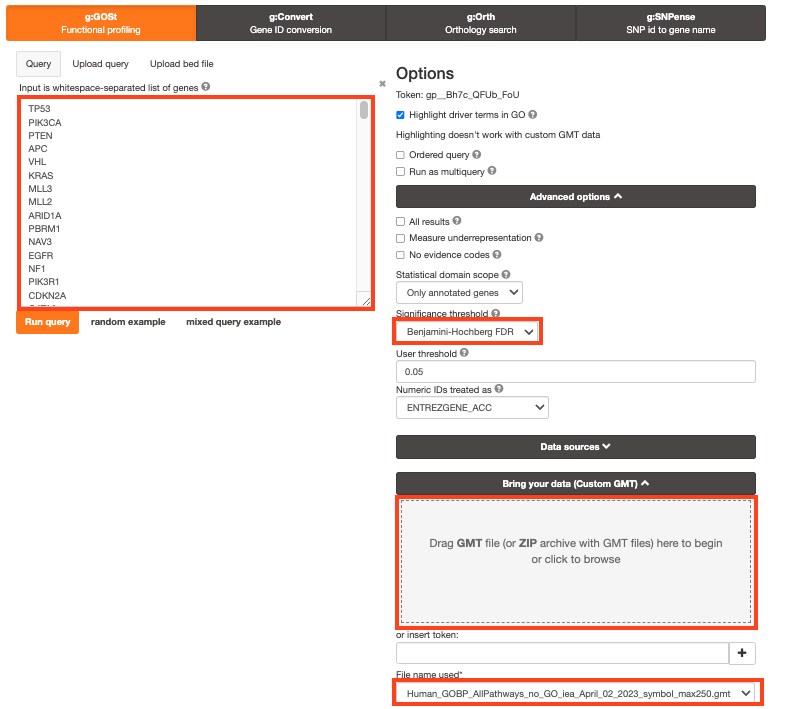
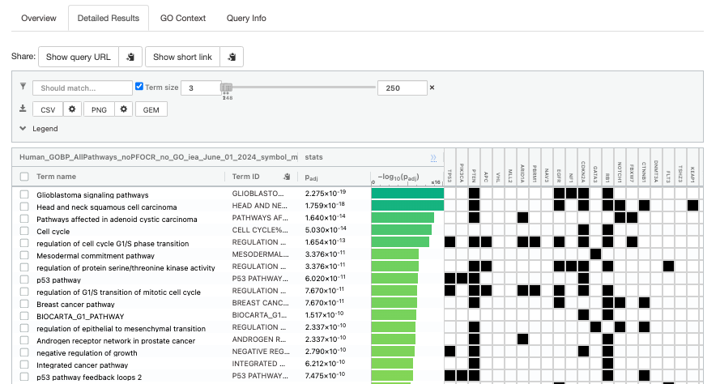

Module 2 lab - g:Profiler
This work is licensed under a Creative Commons Attribution-ShareAlike 3.0 Unported License. This means that you are able to copy, share and modify the work, as long as the result is distributed under the same license.
Introduction
Performing Over-Representation Analysis (ORA) with g:Profiler.
The practical lab contains 2 exercises. The first exercise uses g:Profiler to perform gene-set enrichment analysis.
Goal of the exercise 1
Learn how to run g:GOSt Functional profiling from the g:Profiler website and explore the results.
Data
g:Profiler requires a list of genes, one per line, in a text file or spreadsheet, ready to copy and paste into a web page: for this, we use genes with frequent somatic SNVs identified in TCGA exome sequencing data of 3,200 tumors of 12 types. The MuSiC cancer driver mutation detection software was used to find 127 cancer driver genes that displayed higher than expected mutation frequencies in cancer samples (Supplementary Table 1, which is derived from column B of Supplementary Table 4 in Kandoth C. et al.. Genes are ranked in decreasing order of significance (FDR Q value) and mutation frequency (not shown).
Exercise 1 - run g:Profiler
For this exercise, our goal is to copy and paste the list of genes into g:Profiler, adjust some parameters (e.g selecting the pathway databases), run the query and explore the results.
g:Profiler performs a gene-set enrichment analysis using a hypergeometric test (Fisher’s exact test) with the option to consider the ranking of the genes in the calculation of the enrichment significance (minimum hypergeometric test). The Gene Ontology Biological Process and Reactome are going to be used as pathway databases. The results are displayed as a table or downloadable as an Generic Enrichment Map (GEM) output file.
Before starting this exercise, download the required files:
Right click on link below and select “Save Link As…”.
Place it in the corresponding module directory of your CBW work directory.
We recommend saving all these files in a personal project data folder before starting. We also recommend creating an additional result data folder to save the files generated while performing the protocol.
Step 1 - Launch g:Profiler.
Open the g:Profiler website at g:Profiler in your web browser.
Step 2 - input query
Paste the gene list (Supplementary_Table1_Cancer_drivers.txt) into the Query field in top-left corner of the screen.

The gene list can be space-separated or one per line.
The organism for the analysis, Homo sapiens, is selected by default.
The input list can contain a mix of gene and protein IDs, symbols and accession numbers.
Duplicated and unrecognized IDs will be removed automatically, and ambiguous symbols can be refined in an interactive dialogue after submitting the query.
open the file in a simple text editor such as Notepad or Textedit to copy the list of genes.
Or right click on the file name above and select Open link in new tab
Step 3 - Adjust parameters.
3a. Click on the Advanced options tab (black rectangle) to expand it.
Set Significance threshold to “Benjamini-Hochberg FDR”
User threshold - select 0.05 if you want g:Profiler to return only pathways that are significant (FDR < 0.05).
if g:Profiler does not return any results increase the threshold (0.1, then 1) to check that g:Profiler is running successfully but there are simply no significant results for your query.

3b. Click on the Data sources tab (black rectangle) to expand it.
- UnSelect all gene-set databases by clicking the “clear all” button.
- In the Gene Ontology category, check GO Biological Process and No electronic GO annotations.
No electronic GO annotations option will discard less reliable GO annotations (inferred from electronic annotations (IEAs)) that are not manually reviewed.
if g:Profiler does not return any results uncheck the No electronic GO annotation option to expand annotations used in the test.
- In the biological pathways category, check Reactome.

Step 4 - Run query
Click on the Run query button to run g:Profiler.

Scroll down page to see results.
If after clicking on Run query button the analysis completes but there is the following message above results file - Select the Ensembl ID with the most GO annotations (all). For each ambiguous gene select its correct mapping. Ambiguous mapping is often caused by multiple ensembl ids for a given gene and are easy to resolve as a user. Rerun query.

Step 5 - Explore the results.
Step 5a:
- After the query has run, the results are displayed at the bottom of the page, below the input parameters.
- By default, the “Results” tab is selected. A global graph displays gene-sets that passed the significance threshold of 0.05 for the 2 gene-set databases that we have selected, GO Biological Process(GO:BP) and Reactome(REAC). Numbers in parentheses are indicating the number of gene-sets that passed the threshold.

Step5b:
- Click on “Detailed Results” to view the results in more depth. Two tables are displayed, one for each of the data sources selected. (If more than 2 data sources are selected there will be additional tables for each datasource) Each row of the table contains:
- Term name - gene-set name
- Term ID - gene-est identifier
- Padj - FDR value
- -log10(Padj) - enrichment score calculated using the formula -log10(padj)
- variable number of gene columns (One for each gene in the query set) - If the gene is present in the current gene-set its cell is colored. For any data source besides GO the cell is colored black if the gene is found in the gene-set. For the GO data source cells are colored according to the annotation evidence code. Expand the legend tab for detailed coloring mapping of GO evidence codes.
The first table displays the gene-sets significantly enriched at FDR 0.05 for the GO:BP database.

The second table displays the results corresponding to the Reactome database.

Step 6: Expand the stats tab
Expand the stats tab by clicking on the double arrow located at the right of the tab.

It displays the gene set size (T), the size of our gene list (Q) , the number of genes that overlap between our gene list and the tested gene-set (TnQ) as well as the number of genes in the background (U).
- Above the GO:BP result table, locate the slide bar that enables to select for the minimum and maximum number of genes in the tested gene-sets (Term size).
- Change the maximum Term size from 10000 to 250 and observe the results in the detailed stats panel:

- Without filtering term size, the top terms were GO terms containing that could contain 4000 or 5000 genes and that were located high in the GO hierarchy (parent term).
- With filtering the maximum term size to 250, the top list contains pathways of larger interpretative values. However, please note that the adjusted pvalues was calculated using all gene-sets without size filtering.
Step 7: Save the results
7a. In the Detailed Results panel, select “GEM” . It will save the results in a text file in the “Generic Enrichment Map” format that we will use to visualize using Cytoscape.
- select max term size to 10000 ( = no filtering by gene-set size) and click on the GEM button. A file is downloaded on your computer. (change the name to gProfiler_hsapiens_lab2_results_GEM_maxterm10000.gem.txt)

- select max term size to 1000 ( = filter by gene-set size) and click on the GEM button. A file is downloaded on your computer. (change the name to gProfiler_hsapiens_lab2_results_GEM_maxterm1000.gem.txt)

- select max term size to 250 ( = filter by gene-set size) and click on the GEM button. A file is downloaded on your computer. (change the name to gProfiler_hsapiens_lab2_results_GEM_maxterm250.gem.txt)

7b: Open the file that you saved using the geneset threshold of 250 using Microsoft Office Excel or in an equivalent software.
Observe the results included in this file:
- Name of each gene-set
- Description of each gene-set
- significance of the overlap (pvalue)
- significance of the overlap (adjusted pvalue/qvalue)
- Phenotype
- Genes included in each gene-set
Which term has the best corrected p-value?
Which genes in our list are included in this term?
Observe that same genes can be present in several lines (pathways are related when they contain a lof of genes in common).
The table is formatted for the input into Cytoscape EnrichmentMap. It is called the generic format. The p-value and FDR columns contain identical values because g:Profiler directly outputs the FDR (= corrected p-value) meaning that the p-value column is already the FDR. Phenotype 1 means that each pathway will be represented by red nodes on the enrichment map (presented during next module).

The term regulation of cell cycle G1/S phase transition is the most significant gene-set (=the lowest FDR value). Many gene-sets from the top of this list are related to each other and have genes in common.
Step 8 (Optional but recommended)
8a. Download the pathway database files.
- Go to the top of the page and expand the “Data sources” tab. Click on the ‘combined name.gmt’ link located at bottom of this tab. It will download a file named combined name.gmt containing a pathway database gmt file with all the available sources.

8b. concatenate the GO:BP and Reactome gmt files:
If you want to create a smaller gmt file that doesn’t contain all of the gprofiler datasources you can instead download name.gmt.zip that contains each datasource as its own gmt file. You will need to concatenate the sources you require into one gmt file to use for later.
Option 1: manually if you are not familiar with unix commands
- open a text editor such a Notepad or equivalent
- open hsapiens.GO:BP.name.gmt using the text editor
- open gmt hsapiens.REAC.name.gmt using the text editor
- copy-paste all the rows from REAC file together with all the rows in GO:BP file and save it as hsapiens.pathways.name.gmt .
Option 2: using the cat command if you are familiar with unix commands
- open your terminal window
- cd to the unzipped gprofiler_hsapiens.name folder
- type the following command:
cat hsapiens.GO:BP.name.gmt hsapiens.REAC.name.gmt > hsapiens.pathways.name.gmtyou will be using this optional hsapiens.pathways.name.gmt file in Cytoscape EnrichmentMap.
Exercise 2: Load and use a custom .gmt file and run the query
For this exercise, our goal is to copy and paste the list of genes into g:Profiler, upload a custom gmt file, adjust some parameters (e.g selecting the pathway databases), run the query and explore the results. Uploading a custom gmt file enables us to use alternate pathway data sources not available in g:Profiler.
We are going to use a gmt file that contains a database of pathway gene sets used for pathway enrichment analysis in the standard GMT format downloaded from http://baderlab.org/GeneSets and updated monthly.
This file contains pathways from eight data sources:
- GO,
- Reactome,
- Panther,
- NetPath,
- NCI,
- MSigDB curated gene sets (C2 collection, excluding Reactome and KEGG),
- MSigDB Hallmark (H collection) and
- HumanCyc.
A GMT file is a text file in which each line represents a gene set for a single pathway. Each line includes a pathway ID, a name and the list of associated genes in a tab-separated format. This file has been filtered to exlclude gene-sets that contained more than 250 genes as these gene-sets are associated with more general terms.
Before starting this exercise, download the required files:
Right click on link below and select “Save Link As…”.
Place it in the corresponding module directory of your CBW work directory.
We recommend saving all these files in a personal project data folder before starting. We also recommend creating an additional result data folder to save the files generated while performing the protocol.
STEPS:
Repeat step 1 to 3a from Exercise 1 (go back to exercise 1 to get detailed instructions) Briefly:
- Step 1:
- Open g:profiler
- Step 2a :
- Copy and paste the gene list in the Query field
- Step 2b: Click on the Advanced options tab (black rectangle) to expand it.
- Set Significance threshold to “Benjamini-Hochberg FDR”.
- Step 3a: Click on the Data sources tab (black rectangle) to expand it.
- Unselect all choices by clicking the “clear all” button.
- Step 4: Click on the Custom GMT tab (black rectangle) to expand it.
- Drag in the box the Baderlab gmt file Baderlab_genesets.gmt.
- Once uploaded successfully, the name of the file is displayed in the “File name used” box.

Step 5: Click on Run query .
Step 6: Explore the detailed results

Step 7: Save the file as GEM
- Step 1:
Optional steps
Please follow these optional steps if time permits and/or to explore more g:Profiler parameters.
Here below are 3 optional steps that cover several options offered by g:Profiler:
- test different data sources,
- take the order of the gene list into account,
- use different types of multiple hypothesis correction methods.
Use the same gene list as used in exercise 1 and modify paramters listed above. Observe the results.

Optional 1:
If time permits, play with input parameters, e.g. add TRANSFAC and miRTarBase databases, rerun the query and explore the new results.

Transfac putative transcription factor binding sites (TFBSs) from TRANSFAC database are retrieved into g:GOSt through a special prediction pipeline. First, TFBSs are found by matching TRANSFAC position specific matrices using the program Match on range +/-1kb from TSS as provided by APPRIS (Annotating principal splice isoforms) via Ensembl biomart. For genes with multiple primary TSS annotations we selected one with most TF matches. The matching range for C. elegans, D. melanogaster and S. cerevisiae is 1kb upstream from ATG (translation start site). A cut-off value to minimize the number of false positive matches (provided by TRANSFAC) is then applied to remove spurious motifs. Remaining matches are split into two inclusive groups based on the amount of matches, i.e TFBSs that have at least 1 match are classified as match class 0 and TFBSs that have at least 2 matches per gene are classified as match class 1.
mirTarBase is a database that holds experimentally validated information about genes that are targetted by miRNAs. We include all the organisms that are covered by mirTarBase.
Option 2:
Re-run the g:Profiler using the ordered query checked.
This will run the minimum hypergeometric test. g:Profiler then performs incremental enrichment analysis with increasingly larger numbers of genes starting from the top of the list. When this option is checked, it assumes that the genes were preordered by significance with the most significant gene at the top of the list.
Compare the results between “ordered” and non ordered query.
for this practical lab, the genes were ordered by the number of mutations found in these genes for all samples.
For example, TP53, a highly mutated genes is listed at the top.

Option 3 :
Re-run g:Profiler and select g:SCS or Bonferonni as method to correct for multiple hypothesis testing. Do you get any significant results?

you can get detailed information about these methods at https://biit.cs.ut.ee/gprofiler/page/docs in the section Significance threshold.
Instead of using the g:Profiler website g:profiler can be run directly from R or python see g:Profiler document for more info at https://biit.cs.ut.ee/gprofiler/page/r